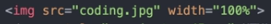
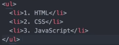

1. 파일을 만들고 에디터 프로그램에서 그 파일을 열고 거기에다 폴더를 만들어라
2. '@.html'은 html의 확장자이다.
1. 글자를 진하게 하려면 '<.strong>','<./strong>'로 한다.
2. 글자에 밑줄을 치려면 '<.u>','<./u>'로 한다.
3. 제목을 정할 때 '<.h@>','<./h@>' {@는 1부터의 수}로 한다. @는 수가 작을 수록 중요하다는 뜻이다.
4. 줄바꿈을 할 때는 '<.br>'로 한다.
5. 새로운 단락을 만들 때는 '<.p>','<./p>'로 한다.
6. 사진을 첨부할 때는 사진을 파일에 저장을 하고 자기가 원하는 이름으로 바꾸고 난 뒤 "" 사이에 정한 이름을 입력하면 된다.<.img src="" width=""> 그리고 사진의 크기는 width=""에다가 원하는 크기를 입력한다 
7. 목록을 만들 때 쓰는 '<.li>','<./li>' 태그는 '<.ul>','<./ul>' 라는 부모 코드랑 있다  '<.ol>','<./ol>'를 이용하여 앞에 숫자를 붙일 수 있다.